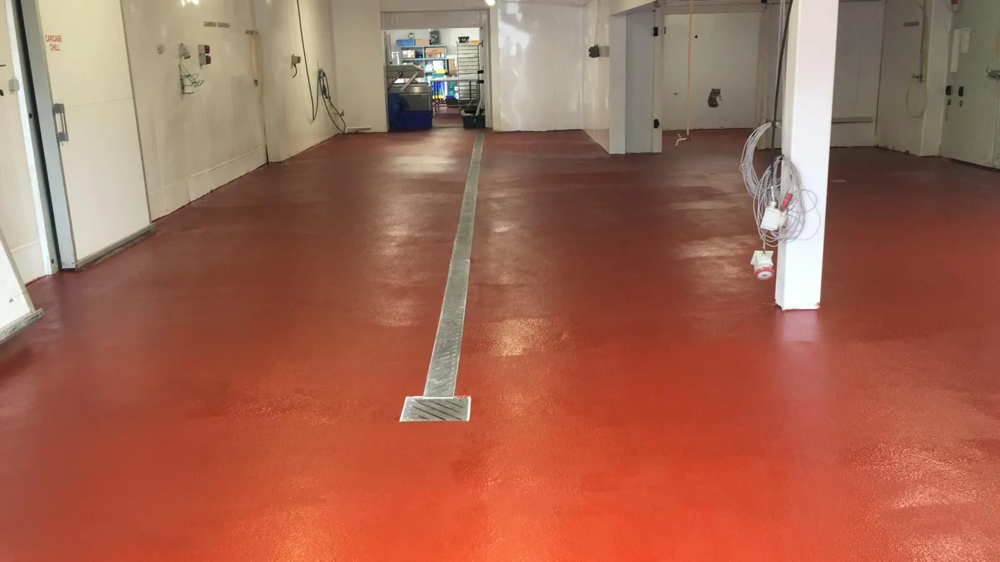

Epoxy vs polyurethane vs MMA
How the three main resin systems compare on strength, heat, chemicals, cure time and cost.
Read the guideFood production floors take more punishment than almost any other floor: hot washdowns, food acids, fats, sugars, heavy trolleys and constant wet. They also have to pass food safety audits. This guide covers what the rules ask for, which resin systems work, and the details that decide whether a floor passes and lasts.

In Ireland, food businesses work to EU food hygiene law (Regulation (EC) No 852/2004), enforced by the FSAI and local environmental health officers. For floors in food rooms, the rules ask that they are:
Customers’ audits and standards like BRCGS usually go further and look closely at wall-floor junctions, drains and damage. A seamless resin floor ticks these boxes far more easily than tiles, which have grout lines that crack and hold dirt.
For production halls, wash areas, dairies, breweries, meat and fish processing and commercial kitchens, a polyurethane (PU) screed is the standard choice. Typical builds:
PU resists lactic acid (milk), citric acid, sugars, fats, blood and the strong cleaning chemicals used in food sites, and it won’t crack when hot water hits a cold floor.
Dry stores, packing rooms, corridors, plant rooms and offices don’t need PU. A good epoxy system costs less and does the job well. Most sites end up with PU in the wet process areas and epoxy elsewhere.
Not sure which applies where? Our epoxy vs PU vs MMA guide goes through it.
Want a straight answer for your floor? Send us the rough size, what the area is used for and a few photos, and we’ll come back with advice and a price.
Most food floor failures don’t start in the middle of the room. They start at the edges and drains.
Wet, greasy floors are one of the biggest causes of injuries in food sites. Resin floors can be finished with different grades of anti-slip aggregate. The trade-off is simple: the rougher the finish, the better the grip and the harder it is to clean.
We match the texture to each area: a coarser finish where floors are constantly wet or greasy, a finer one in areas that get washed down but are mostly dry. Slip resistance can be measured with a pendulum test, and a result of 36 or more in wet conditions is generally treated as low slip risk.
Most food businesses can’t stop for long. Ways to keep disruption down:
We’ll agree a programme with you before the work starts, so you know exactly which areas are out of use and when. See how long a resin floor takes for typical timings.
Cured epoxy is fine for dry food areas like stores and packing rooms. In wet, hot process areas it’s the wrong choice. Hot washdowns and thermal shock can crack it, and once it cracks it’s no longer hygienic. Use PU screed there.
For heavy-duty wet areas with hot washdowns, 6–9 mm PU screed. For medium-duty wet areas, 4–6 mm. Dry areas can usually take a thinner epoxy system. We’ll recommend the build for each area after a survey.
Yes. We regularly phase work, use weekends and shutdowns, and use fast-cure systems where downtime is critical. We agree the programme with you before starting.
Yes. Resin coving and detailing into drains and channels are part of a proper food floor, and we include them in the quote so nothing is left to chance.
Often, yes. Cracks, holes and damaged areas around drains can be cut out and repaired in compatible resin. If damage is widespread, a full new floor is usually better value. See our repairs page.
Tell us about your floor and we’ll come back to you with advice and a quote. We’re fully insured and work on sites of every size, anywhere in Ireland.
How the three main resin systems compare on strength, heat, chemicals, cure time and cost.
Read the guide
Typical install times, when you can walk and drive on the floor, and how to keep downtime short.
Read the guide
Typical prices per m² for epoxy, PU and MMA floors, what drives the cost, and how to compare quotes.
Read the guide